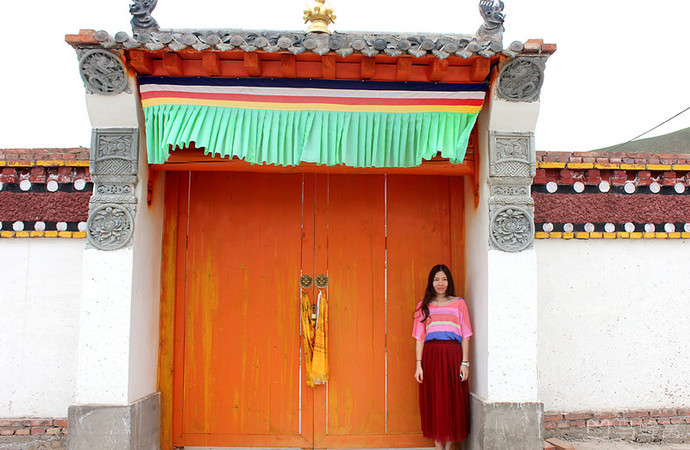
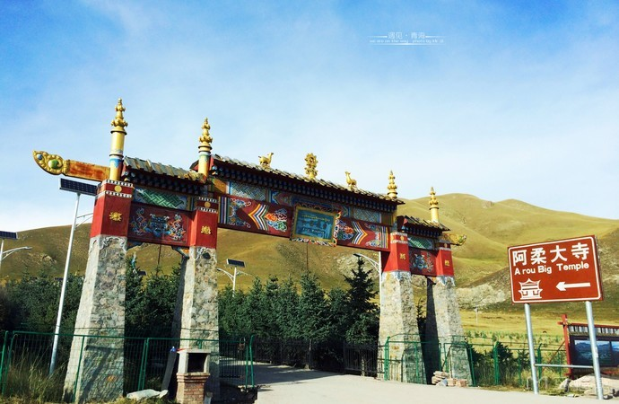
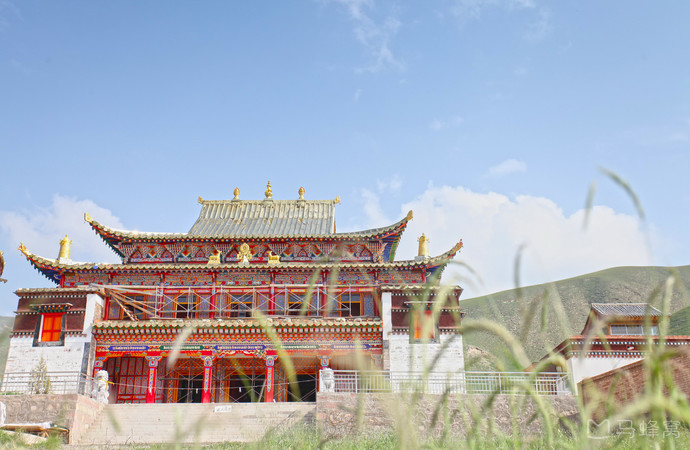

阿柔大寺

阿柔大寺又称“阿力克大寺”，位于祁连县八宝镇的东南21公里处，游客游玩祁连到门源等地时多会经过这里。寺院始建于清顺治年间，建寺伊始规模较小，到20世纪40年代，在阿柔千户南喀才昂和百户阿多等人的支持下发展壮大，成为祁连县规模最大的格鲁派寺院。
阿柔大寺位于丘陵状的草原之上，周围碧绿的草原连绵起伏，十分漂亮。寺院有藏族传统的庭院式建筑、大殿、金塔、转经长廊等，在建筑外面拍照十分漂亮。游客来此可以漫步寺内，逐一参观朝拜。另外，这里目前还未开发为景点，所以氛围也比较安静，给人神圣自然的感觉。
该寺的大型活动有正月祈愿法会、四月的守斋戒会、六月的供养会和住夏活动、十月的甘丹五供节以及显宗学院的四季学经期会和修供大威德金刚、马首金刚的仪轨等。



但是人还不错，没有游客的喧嚣和纷扰，阿柔大寺依旧保持着佛门圣地的清净，僧人们按部就班的上课、辩经，信众们虔诚的绕寺转山、磕头、续油灯，寺院内小猫悠闲的踱步，牛羊们偏居一角嚼着青草，只有游客像是多余的，站在哪里都显得不合时宜，举着相机却不敢随意摁下快门，生怕打扰了这所有的一切。
这个寺在我原来看游记的时候还不错的，但这次来感觉已经破旧了，人也很少，收费是20元。我们只在外面看了一下就没进去，面积还是很小的，真的很不起眼。
阿柔大寺不像其他寺院那么齐整，寺院里里有深深茂密的野草，但却显得格外的宁静，人们需要这份宁静，虔诚的拜佛者更需要这份宁静的氛围和心静。寺外有一圈转经筒，转经的藏人虚幻的背影充满意境。